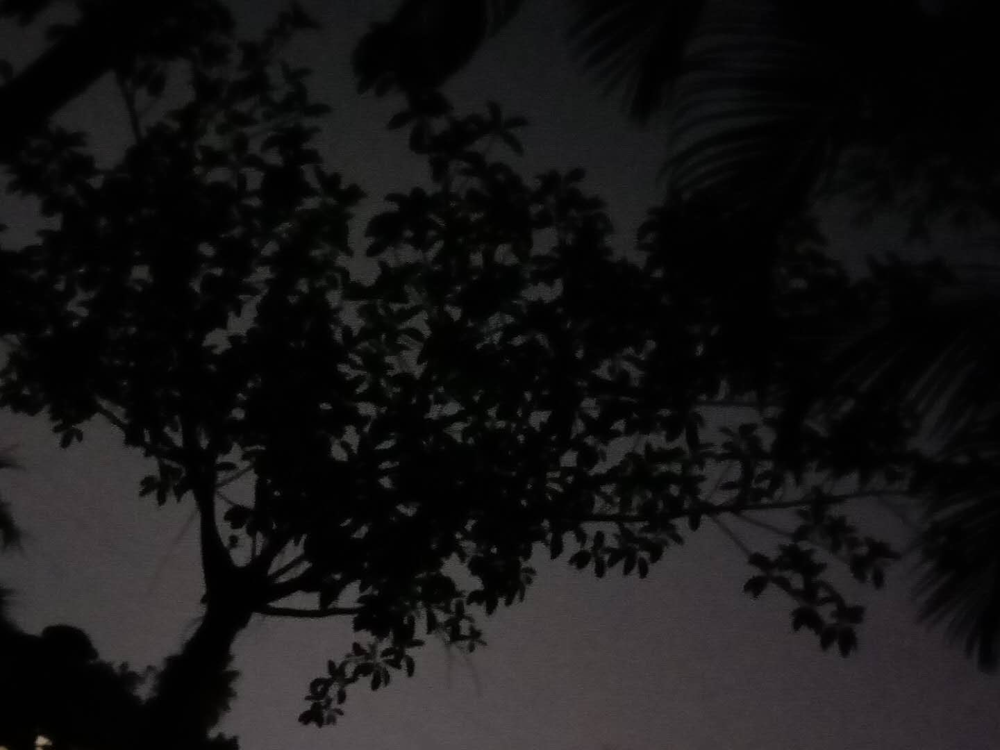
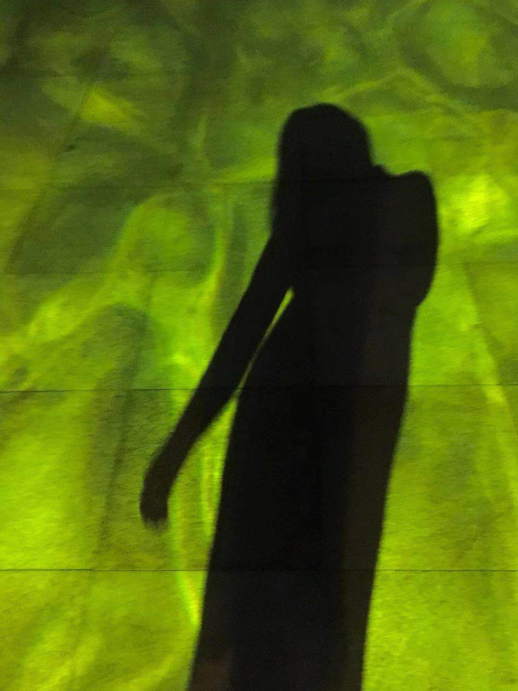
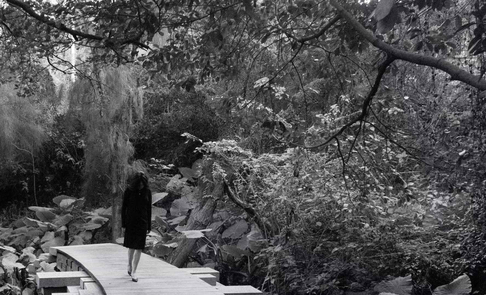
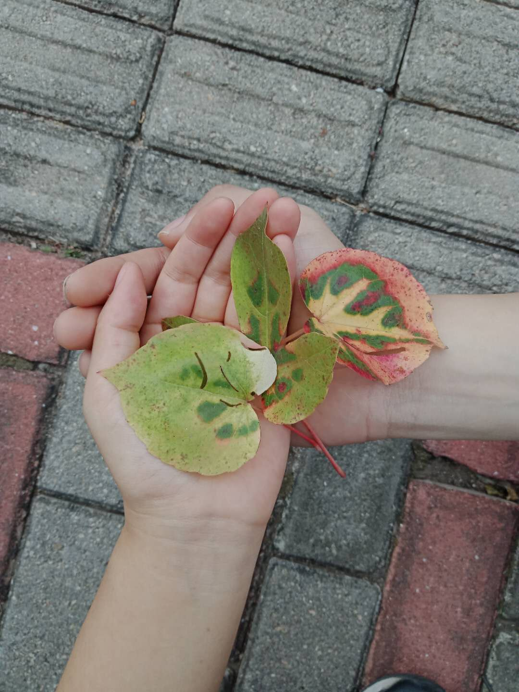
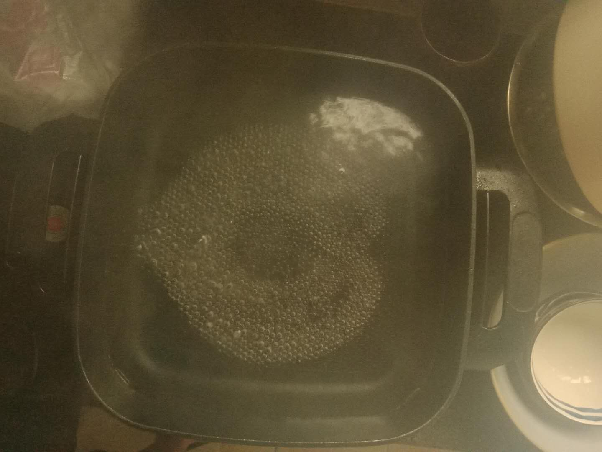
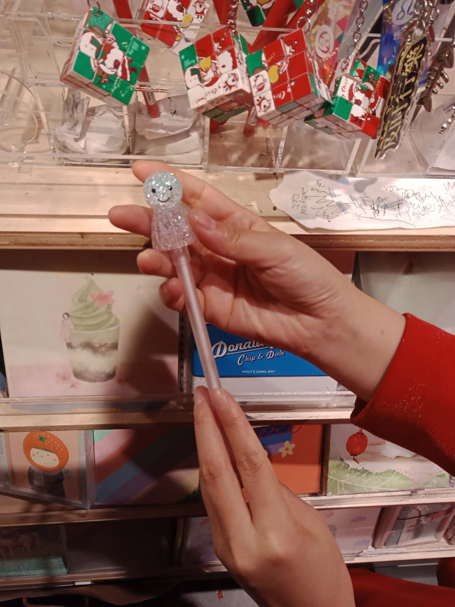
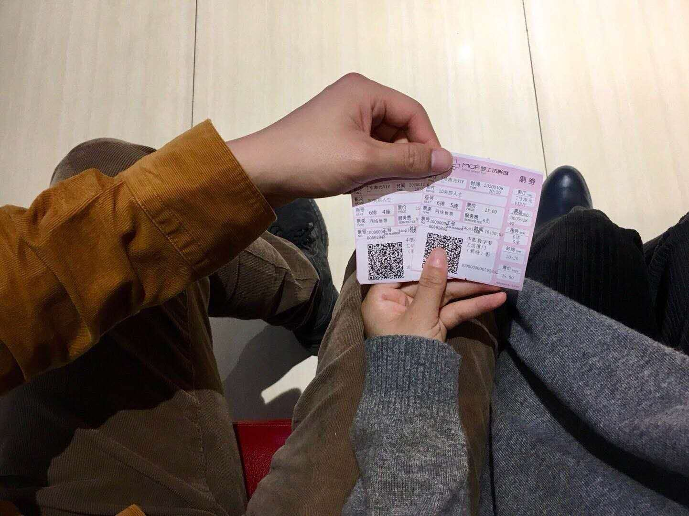
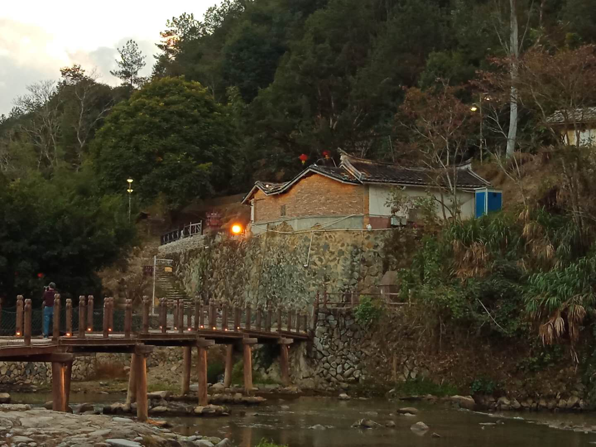
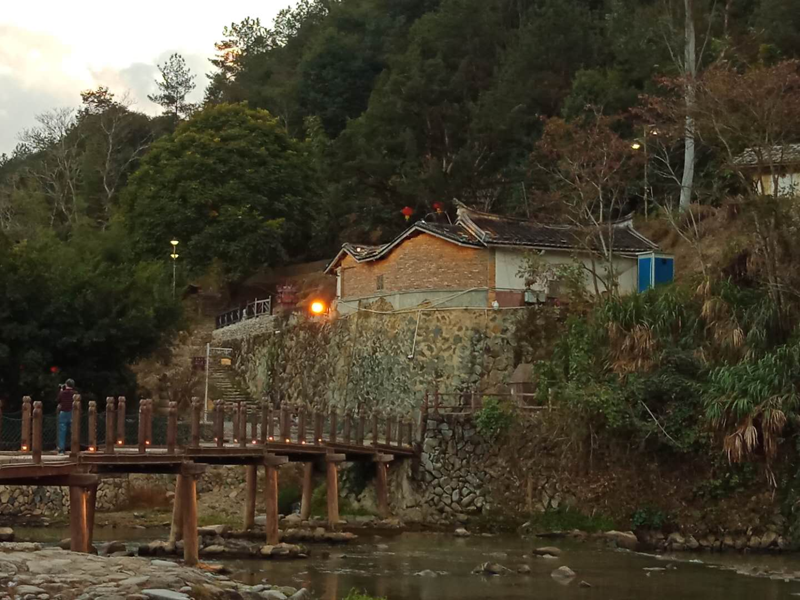

- 2019
-
10、11遇见经过七个小时的高铁，初到厦门，我只知道海、忠仑公园、泰和花园和长庚医院，我认识的人，只有你。每天的行程简单而充实，要么和你在一起，要么在等你。记得我们奔跑在去往海边的干净的马路上，像风一般的少年。初出长成的爱，鲜红又甜蜜。我们坐在出租车上讨论着光影、人生，然后下了车后大笑，因为司机被你的思维彻底弄晕啦。我总在想，这样的人，一辈子只能遇见一次吧。（图片为忠仑公园夜景，2019.10.10）11月4日，再次来厦。糟心的是，我订的房间太丑了。但是我们之间的距离更近了（灵与肉的贴合）。第二次看到你跳舞，我被你的自由和热血惊得说不出话，表达原始感情的最直接的方式可能就是这样了。你真是一个精灵。我们去了书店，天哪，这真是浪漫至极。3d电影对我来说也是新鲜的，椅子动起来的时候，我真是被吓到了（每次我慌的时候，表面都是十分冷静的）。9日的凌晨时分，意志拖着朦胧的疲惫和寒冷，我们吃了早饭，坐上滴车，我记得你紫色的大衣，总有着未说出口的别离。我不愿与你离开，离开你，我的人生没有意义，那是我在厦门站二楼看着一楼检票口的你所想的。（图片为散步时你在波浪灯下的舞）第一次，我给你拍照。我的触角，追寻你味道的痕迹，当我们交错的刹那，我就会记录下来，虽然这都不太熟练，不过我已经恋上了找你的感觉。的确，你的魅力早已超越了拍摄者的技术，那是自然而然的冲动，悲伤的冲动，美艳的冲动，深邃的冲动，于是对你的爱恋，笼着神秘之光，又夹着崇拜之情。时光静止（照片），而我们在流动。（图片为第一次为你拍照的练习）
-
12这一次，我不走了12月的厦门，与萧瑟的拉萨不同，散着夏日残留的热烈。这次回来，我明白了，人生转瞬即逝，和你多分离一天，人生就浪费一天。我要在这里努力，逐渐进步，为了确定的终点，笔直地行进。17日，与你散步，发现颜色奇特的叶子，所以说，大自然是最真实的艺术家。我们还发现了枯树藤，它垂着树皮，挂着枯叶，我们轮流提着，提回了家。柴米油盐，爱有浓香。一锅沸腾的爱心，煮着每一日。和谭小姐的第一个平安夜，第一个圣诞，第一个跨年——总有第一次，那是永恒的开始。你为我在优衣库选了新衣服新裤子，哎呀呀，又好看又舒服的衣服裤子，像是过年一样，我觉得，整个人都变新了，那是一种心境，重新审视世界的眼睛。看看你呀，孩子一样在礼品店挑物品，你看上了旋转音乐盒，觉得贵，就没要。我默默记下了：要送你一个，更好的，你喜欢的东西，就是我心头的秘密。
- 2020
-
1月春美丽人生，与谭小姐的第二部电影院观看的电影，爱的感情，总是最鲜艳，即使是和平时代。我慢慢接触你的世界，摄影、电影，感觉到光影的跃动，和干净的美。一周的休息日，就是我的摄影练习日，那种新鲜，如初生的爱，如新买的毛衣，如电影院宏大震撼的感觉，那种新鲜，成了一周固定的期待。那种新鲜，和你头发和身体的味道一样，抓住了我。
 去旅行了。总有第一次。可是肺炎席卷，愚钝的我还满不在乎。这是我犯的错，让你生气，还导致后来买不到口罩，这是我犯的错，由于偏执的愚钝。不过旅途开始了，像一帧帧影像。终有一天，我们会去往隐居之地。土楼的风景还是很让人舒心的。两个忘记门票景点的跑来跑去的人，给无名的大树拍照，记录风，抚摸古旧的墙，这些景色啊，简直是过剩的盛宴，让人疲于惊叹应接不暇的美。第一个大年夜、年初一，这是长大后又出现的期待感和温暖。我们在无声的湖边散了步，幽暗的湖面上画着倾倒的榕树。我们放了烟花，光星四射，童年的笑声铃铛一般回荡。
去旅行了。总有第一次。可是肺炎席卷，愚钝的我还满不在乎。这是我犯的错，让你生气，还导致后来买不到口罩，这是我犯的错，由于偏执的愚钝。不过旅途开始了，像一帧帧影像。终有一天，我们会去往隐居之地。土楼的风景还是很让人舒心的。两个忘记门票景点的跑来跑去的人，给无名的大树拍照，记录风，抚摸古旧的墙，这些景色啊，简直是过剩的盛宴，让人疲于惊叹应接不暇的美。第一个大年夜、年初一，这是长大后又出现的期待感和温暖。我们在无声的湖边散了步，幽暗的湖面上画着倾倒的榕树。我们放了烟花，光星四射，童年的笑声铃铛一般回荡。 - 肺炎的相互相依
- 未完待续……